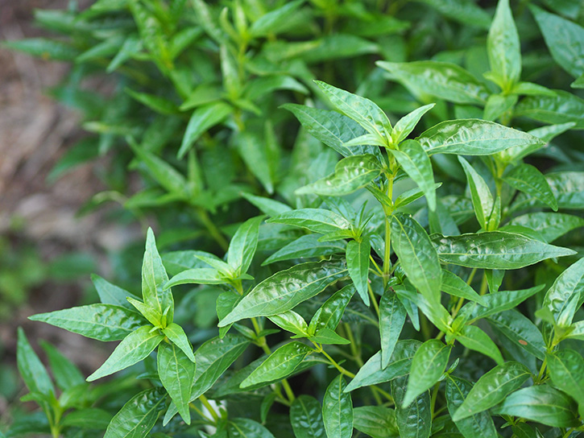

ฟ้าทะลายโจร
ไม้ล้มลุก ลำต้นตั้งตรง สูงประมาณ 30 - 60 เซนติเมตร ส่วนตรงปลายกิ่งเป็นเหลี่ยม แตกกิ่งเล็กด้านข้างจำนวนมากลักษณะเป็นพุ่ม กิ่งก้านมีสีเขียว
ใบ เป็นใบเดี่ยว ออกเรียงตรงข้ามกัน ลักษณะใบรูปไข่รียาว แคบโคนใบ และปลายใบแหลม ขอบใบเรียบ แผ่นใบเรียบเกลี้ยงมีสีเขียว
ดอก ออกดอกเป็นช่อ ตามซอกใบและปลายกิ่ง ดอกมีขนาดเล็ก สีขาว กลีบรองดอกมี 5 กลีบ กลีบดอกมี 5 กลีบ โคนติดกันเป็นหลอดปลายแยกเป็น 2 ทาง กลีบล่างมี 2 อัน อับเกสรสีม่วงแดง และมีขนยาวๆ
ผล คล้ายฝักต้อยติ่งแต่ผอมและมีขนาดเล็ก เมื่อฝักแก่จะแตกออกเป็น 2 ซีกอยู่บนต้น ซึ่งทำให้มองเห็นเมล็ดวางอยู่ในผลได้ชัด ปลายแหลม เมล็ดในสีน้ำตาลอ่อน
นำเมล็ดจากฝักแก่ที่มีสีน้ำตาลแดงโรยในดินแล้วกลบด้วยดินอีกชั้นบาง ๆ หากใช้ต้นกล้า ควรเลือกต้นกล้าฟ้าทะลายโจรที่มีอายุเกิน 30 วันมาปลูกลงดิน
วางกระถางในที่มีแสงแดดรำไร รดน้ำให้เพียงพอและสม่ำเสมอ หากปลูกที่มีแดดจัดควรรดน้ำเพิ่ม
ทั้งนี้ จะเริ่มเก็บใบได้เมื่อต้นมีอายุประมาณ 3-6 เดือน เป็นช่วงที่มีสารสำคัญเยอะที่สุด สามารถนำไปตากแห้งและเก็บได้นาน 1 ปี วิธีเก็บคือ ตัดยอดอ่อน 1 ฝ่ามือ แล้วเหลือตอไว้ รอประมาณ 1-3 เดือน ก็จะเริ่มออกดอกอีกครั้ง และเมื่อดอกเริ่มบานก็สามารถเก็บใบมาใช้ประโยชน์ได้อีกรอบ ฟ้าทะลายโจร 1 ต้น สามารถเก็บมาทำยาได้ 2-4 ครั้ง
ควรให้น้ำอย่างสม่ำเสมอและพอเพียง ตั้งแต่ปลูกจนถึงช่วงเก็บเกี่ยว ในช่วงที่มีแดดจัดหรือหน้าร้อนควรรดน้ำ 2 ครั้งต่อวัน ทั้งเช้าและเย็น หากมีแดดไม่จัดมาก รดน้ำวันละครั้งเฉพาะช่วงเย็นก็ได้ เมื่อต้นอายุประมาณ 2 เดือนสามารถลดการให้น้ำได้ ขึ้นอยู่กับความเหมาะสม
ใบ รสขม บดผสมน้ำมันพืชทาแผลน้ำร้อนลวก ไฟไหม้, ใช้ปนกับเพลี้ยใส่ลาบเพื่อเพิ่มความขม ใบสดนำมาเคี้ยวกินหรือต้มน้ำดื่มแก้อาการคออักเสบ เจ็บคอ เป็นยาขมเจริญอาหาร ในใบจะมีสารประกอบที่มีรสขมละลายน้ำได้อยู่ ซึ่งชาวอินเดียจะนำใบมาคั้นเอาน้ำผสมกับเครื่องเทศ เช่น พวกกระวาน อบเชย กานพลู ฯลฯ แล้วนำมาปั้นเป็นเมล็ดกลม ๆ เป็นยารักษาโรคที่มีอาการผิดปกติทางเดินอาหารในเด็ก เป็นยาดองเหล้า (Tincture) และยาชง (Infusion)
ต้น นำมาตากแห้ง ใช้เป็นยาแก้ธาตุไม่ปกติ บำบัดโรคที่เกี่ยวกับทางเดินอาหารและมาลาเรีย ยาขมบำรุงกำลัง และเป็นยาขับน้ำเหลือง สิ่งสกัดของพืชชนิดนี้จะมีขายอยู่ในประเทศอินเดีย และสาธารณรัฐประชาชนจีน
ส่วนเหนือดิน บรรเทาอาการท้องเสียชนิดที่ไม่เกิดจากการติดเชื้อ เช่น อุจจาระไม่เป็นมูกหรือมีเลือดปน
ทั้งต้น รสขม รับประทานแก้ไข้ แก้หวัด แก้ต่อมทอนซิลอักเสบ แก้บิด แก้ท้องร่วง แก้ปอดอักเสบ ขับเสมหะ รักษาโรคผิวหนัง ช่วยเจริญอาหาร
เก็บฟ้าทะลายโจรที่แห้งสนิทแล้วใส่ถุงพลาสติก ปิดปากถุงหรือมัดให้แน่น และเก็บในที่ที่สะอาด ไม่ควรเก็บวัตถุดิบไว้ใช้นานเกินไป เพราะสมุนไพรอาจจะเสื่อมคุณภาพได้